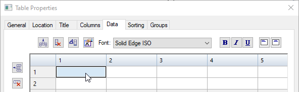

Create a user-defined table
-
Choose the Table command located on the Home tab→Tables group or on the Tables tab.
The Table Properties dialog box is displayed.
-
Use the Data tab to enter information in the table cells. You can:
-
Insert, delete, move, and format columns and rows using the buttons at the top and on the left. For more information, see Make changes to a table or a parts list.
-
Click a table cell, and then enter information in it. You can type, or copy and paste, or click Insert Property Text to reference properties or variables. For more information, see Add and edit property text in a user-defined table.

-
-
Create the column headings for each column:
-
Double-click the blank cell at the top of a column.
-
In the Format Column dialog box, in the Column Header section, type the column heading name in the box, and click OK.
-
-
On the Location tab, specify where you want to place the table:
-
To place the table on the current drawing sheet, select Create table on active sheet.
-
To create a new sheet and place the table on it:
-
Select Create new sheets for table.
-
Edit the sheet coordinates in the X origin and Y origin boxes.
-
-
-
On the active drawing sheet, click to place the table.
-
If you create the table on the active sheet, then you can see the new table when you click.
-
If you create new sheets for the table, you need to select the newly created table sheet tab at the bottom of the document to see the new table.
-
-
To specify sheet coordinates for placing a table on the active sheet:
-
Select an option from the Anchor corner list.
-
Select the Enable predefined origin for placement check box.
-
Edit the sheet coordinates in the X origin and Y origin boxes.
-
-
You also can add, remove, and format columns using the Columns tab. For more information, see Using the Columns tab.
-
To learn how you can change the appearance of individual elements of a table—titles, columns, headers, and data cells—without changing the table style, see Manipulate table rows and columns.
-
You can use the Groups tab to group table data into categories, which keep like items together. You can use the Sorting tab to specify the order in which the table columns are displayed.
Note:In a user-defined table, the column headings on the Data tab are used to assign data to groups on the Groups tab and to specify the sort order on the Sorting tab.
-
You can use the View tab, Solid Edge Options dialog box (Draft) to choose how the table sheets are listed in the sheet tab tray. For example, the Number sheet groups separately option specifies that table sheets are numbered separately from other working sheets, and that the table sheets generated for one table are numbered separately from the table sheets generated for a different table.
Example:A draft document contains two tables generated automatically using the Create new sheets for table option. The first table requires three table sheets; the second table requires two table sheets. The sheet tabs in the tray are labeled:
1 - Table 1:1
2 - Table 1:2
3 - Table 1:3
1 - Table 2:1
2 - Table 2:2
How do I
Add and edit property text in a user-defined tableLearn more
User-defined tablesLook up more details
Table commandTable command bar
Table Properties dialog box